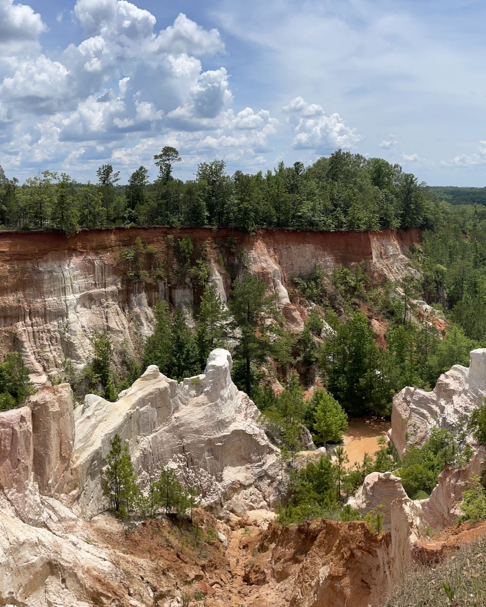

The Peach State

Georgia's diverse landscapes provided us with some of our most memorable hiking experiences. From the rugged Appalachian Mountains in the north to the mysterious Okefenokee Swamp in the south, the Peach State offers incredible variety for outdoor enthusiasts. Our journey through Georgia took us along mountain ridges with panoramic views, through ancient forests, and beside cascading waterfalls that epitomize the natural beauty of the Southeast.
The southern hospitality we encountered on Georgia's trails was as warm as the climate. Fellow hikers and locals shared their favorite spots and stories, making our exploration feel like a journey through both stunning landscapes and rich cultural heritage.